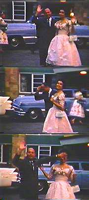

|
 |
This was
an early manifestation of Travis' displeasure in her own body... ...but it would be another four years before George and Mary Frances would feel the need to seek professional advice. However, in the stories with which we are concerned, time expands and contracts without regard for the oscillating cesium atom. And so it is that four summers later we find Travis in Puerto Rico for the annual family vacation. |